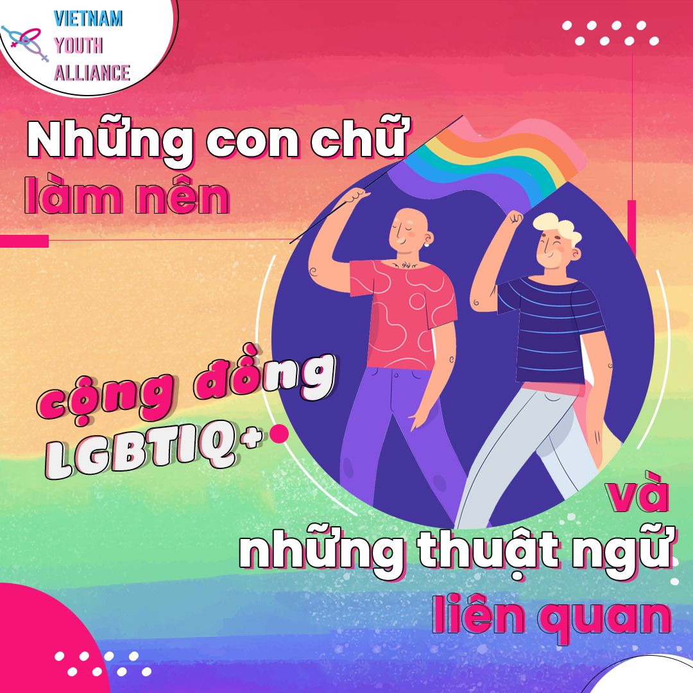

Những con chữ làm nên cộng đồng LGBTIQ+

Xuyên suốt nhiều thập kỷ qua, một số thuật ngữ đã xuất hiện nhằm mục đích mô tả những người không định danh mình theo giới và giới tính truyền thống.
Những người này hình thành nên một cộng đồng, và vì không phải là một tổ chức chính thức, không có một cái tên “chính thức” nào được đặt ra cho họ. Ngày nay xã hội thường dùng những cụm từ viết tắt phổ biến nhất như “LGBT” hoặc “LGBTQ” để đề cập đến họ. Tuy nhiên, cộng đồng còn được đề cập đến với rất nhiều các tên gọi tắt khác nhau như: 2SLGBTQ+, LGBTTIQQ2SA, LGBTQQIP2SAA và LGBTQ2SAPQ+.
Mỗi cái tên được nhắc đến ở trên không phải là bản “đầy đủ”, nhưng cũng chẳng phải bản “thiếu”. Và cũng chính vì lẽ này mà rất nhiều bạn vẫn gặp nhiều khó khăn trong quá trình tìm hiểu về ý nghĩa của những chữ cái trong những cái tên này.
Ở bài viết này, Vietnam Youth Alliance xin phép được mang đến cho các bạn các định nghĩa và thông tin liên quan của từng chữ cái đã và đang được sử dụng trong các tên gọi của cộng đồng LGBTIQ+ cũng như các thuật ngữ khác nhé.
Chữ viết tắt
L – “Lesbian” (Đồng tính nữ)
Chỉ những người có bản dạng giới là nữ có sự hấp dẫn về phương diện tình dục, tình cảm và/hoặc cảm xúc bởi người có bản dạng giới là phụ nữ khác một cách lâu dài. Một số người đồng tính nữ thích nhận diện bản thân là gay hoặc phụ nữ gay.
Đồng tính luyến ái nữ đã từng được chia thành hai phân vai:
- Butch (gọi tắt là B): Những người đồng tính nữ có khuynh hướng ăn mặc và cá tính như nam giới. (Mềm mỏng hơn thì gọi là soft-butch).
- Femme: Những người đồng tính nữ có khuynh hướng ăn mặc và cá tính như nữ giới.
Tuy nhiên, tới thời điểm hiện nay, việc phân vai trò trong mối quan hệ nữ – nữ đã không còn phù hợp, việc phân vai nam tính/nữ tính làm mối quan hệ bị dị tính hóa, không còn đúng nghĩa đồng giới nữa.
G – “Gay” (Đồng tính nam)
Chỉ người có bản dạng giới nam có sự hấp dẫn về phương diện tình dục, tình cảm và/hoặc cảm xúc bởi người có bản dạng giới là nam khác một cách lâu dài.
“Gay” còn chỉ đồng tính luyến ái nói chung (ví dụ như gay bar - quán bar dành cho người đồng tính hay gay wedding – đám cưới đồng tính).
Thường khi quan hệ tình dục, người ta sẽ phân ra thành:
- Top: Những người đồng tính nam chủ động trong việc quan hệ tình dục.
- Bottom: những người đồng tính nam bị động trong việc quan hệ tình dục.
Tuy nhiên, bản dạng giới và xu hướng tính dục là hai khái niệm không ảnh hưởng lẫn nhau, nên một người chuyển giới nam hoàn toàn có thể là người đồng tính, yêu người cùng bản dạng giới với họ.
B – “Bisexual” (Song tính)
Chỉ người có thể có sự hấp dẫn về phương diện tình dục, tình cảm và/hoặc cảm xúc một cách lâu dài với người cùng giới hoặc thuộc một bản dạng giới khác (không nhất thiết phải là nam/nữ). Người song tính luyến ái có thể trải nghiệm sự hấp dẫn theo những cách và cấp độ khác nhau trong cuộc đời. Người song tính không cần phải có trải nghiệm cụ thể gì về tình dục để được coi là một người song tính luyến ái mà thực tế thì, họ không cần phải có bất kỳ kinh nghiệm nào để nhận mình là người song tính.
Ngoài ra, mặc dù không thuộc một phần của song tính, cũng có tò mò song tính (Bi-curious): Những người không xác định mình là song tính hay đồng tính nhưng cảm thấy tò mò về mối quan hệ tình dục hay tình cảm với người cùng giới.
T – “Transgender” (Chuyển giới)
“Trans” còn là một từ dùng để chỉ người chuyển giới hoặc những người ở dưới “chiếc ô” này.
Đây là một khái niệm dùng để chỉ chung những người có bản dạng giới không trùng với giới tính sinh học được xác định từ ban đầu. Người ở dưới “chiếc ô” này có thể tự miêu tả bản thân bằng một hay nhiều thuật ngữ đa dạng khác nhau – bao gồm cả chuyển giới, và việc sử dụng các từ ngữ mô tả bản thân là tuỳ thuộc vào lựa chọn của mỗi cá nhân.
Trong đó, người chuyển giới (trans) được chia thành:
- Chuyển giới nam (Transguy/Transman/Female-to-male): Người có giới tính sinh học là nữ nhưng bản dạng giới là nam. Đa số những người chuyển giới nam thường chọn các tên gọi nam tính hoặc trung tính.
- Chuyển giới nữ (Transgirl/Transwoman/Male-to-female): Người có giới tính sinh học là nam nhưng bản dạng giới là nữ. Đa số những người chuyển giới nữ chọn các tên nữ tính.
Có hai từ thường được dùng để chỉ người chuyển giới:
- Transgender: Những người có bản dạng giới không trùng với giới tính sinh học của mình, nhưng lại không sử dụng các biện pháp phẫu thuật xác định lại giới tính mà sống với cơ thể sinh học.
- Transsexual: Những người đã có can thiệp xác định giới (phẫu thuật các bộ phận đặc trưng cho giới tính, sử dụng nội tiết tố,…).
Tuy nhiên đến nay, việc chọn giữa transgender (chuyển giới) hay transsexual (chuyển tính) để định nghĩa cộng đồng người chuyển giới (trans) vẫn còn nhiều tranh cãi. Nhiều người chuyển giới lựa chọn sử dụng nội tiết tố (hay còn gọi là hormone) phù hợp do bác sĩ kê đơn để xác định lại giới tính, một số lại tiến hành phẫu thuật. Tuy nhiên, không phải người chuyển giới nào cũng có thể và có cơ hội thực hiện những lựa chọn trên. Điều duy nhất cần ghi nhớ chính là, việc một người có là người chuyển giới hay không không hề phụ thuộc vào ngoại hình của họ hay các thủ tục y tế.
 Laverne Cox
Laverne Cox
Nguồn ảnh: Google
Q – “Queer” hoặc “Questioning”
"Queer" từng là một từ lóng để gọi cộng đồng LGBTIQ+ với tính xúc phạm (tương tự như “bê đê”, “đồng bóng” trong tiếng Việt và “pede” trong tiếng Pháp). Tuy nhiên khi phong trào quyền LGBT nổ ra mạnh mẽ thì Queer được bình thường hóa và nay đã được chấp nhận rộng rãi như một “chiếc ô chung” để chỉ những người có tính dục thiểu số, hoặc thậm chí là cả những người cảm thấy mình nằm ngoài những khuôn mẫu tiêu chuẩn của xã hội (như nghệ sĩ trình diễn, người drag,…).
Thông thường, đối với những người nhận diện bản thân là queer, các thuật ngữ đồng tính nữ, đồng tính nam, hay song tính đều bị cho là quá gò bó và/hoặc là có quá nhiều ý nghĩa văn hoá mà họ cảm thấy không phù hợp với bản thân mình. Từ chỗ bị coi là một từ ngữ mang tính miệt thị cộng đồng LGBT, “queer” giờ đây lại được chính những người trong cộng đồng sử dụng để miêu tả chính mình, tuy nhiên, nó không phải là một thuật ngữ được chấp nhận rộng rãi, ngay cả với người trong cộng đồng.
Ký tự Q xếp sau LGBT thường có nghĩa “queer”, hoặc một nghĩa ít thông dụng hơn là “questioning”. Questioning chỉ một người vẫn chưa hoàn toàn chắc chắn về xu hướng tính dục hoặc bản dạng giới của mình. Ngoài ta đây còn là một từ dùng để chỉ quá trình tự khám phá xu hướng tính dục của một người.
2S – “Two-spirit”
Một thuật ngữ đề cập đến một số bản sắc văn hoá trong các cộng đồng người bản địa tại Bắc Mỹ, phổ biến nhất là một loại bản dạng giới "thứ ba" có ý nghĩa tâm linh và lễ nghi tại đó. Trước khi bị biến thành thuộc địa, nhiều nền văn hóa bản địa không coi bản dạng giới là một dạng nhị nguyên (chỉ có nam và nữ). Tuy nhiên, dưới các tác động của thực dân, chuẩn mực cũng như vai trò văn hóa của việc này phần lớn đều bị mai một. Từ năm 1990, đã có nhiều nỗ lực cùng phối hợp để khôi phục hai bản sắc tâm linh trên cùng ý nghĩa của chúng để ngăn chặn sự mất mát văn hoá này.
Đây là một bản dạng chỉ được dùng bởi người bản địa ở Bắc Mỹ, nên thường những người khác không dùng.
P – “Pansexual” (Toàn tính)
Những người có sự hấp dẫn tình dục hay có cảm xúc tình cảm với đối phương mà hoàn toàn không quan tâm tới bản dạng giới của họ. Những người là toàn tính luyến ái được coi là bị “mù giới” (gender blind), tức, không có bất kỳ quan niệm nào về bản dạng giới của người khác, mà chỉ yêu con người, vẻ đẹp của họ. Đây là điểm khác biệt giữa người toàn tính và người song tính.
Trong toàn tính luyến ái còn một phân nhánh nhỏ ít được chú ý tới, đó là “Omnisexual” – Những người có sự hấp dẫn về mặt tình dục hay có cảm xúc tình cảm với một người, bất kể bản dạng giới của họ. Điều khác biệt giữa pansexual và omnisexual chính là tuy omnisexual có cảm xúc với mọi nhãn đa dạng thì vẫn còn đôi chút quan tâm về bản dạng giới của đối phương.
P – “Polysexual” (Đa tính)
Từ dùng để chỉ những người có sự hấp dẫn tình dục bởi nhiều hơn hai bản dạng giới. Những người này biết rằng họ bị hấp dẫn tình dục bởi nhiều bản dạng giới khác nhau nhưng không xác định số bản dạng giới này.
A – “Asexual” (Vô tính)
Từ chỉ những người không có sự thu hút trên phương diện tình dục bởi bất kỳ ai, bất kỳ bản dạng giới nào. Khác với việc kiêng tình dục (sexual abstinence) hay sống độc thân tự nguyện (giống như việc thề nguyện không kết hôn hoặc thề giữ trinh tiết của những người theo một tôn giáo nào đó) (celibacy), những người vô tính lựa chọn không quan hệ tình dục vì vô tính là một thiên hướng tình dục và thường sẽ lâu dài hoặc vĩnh viễn. Điều này không có nghĩa là họ không quan hệ tình dục, chỉ là họ không có ham muốn quan hệ hay bị lôi cuốn trên phương diện tình dục bởi người khác.
Người thuộc xu hướng tình dục này cũng có thể là aromantic (người vô ái), có nghĩa là họ không bị hoặc bị ảnh hưởng rất ít bởi sự hấp dẫn về mặt tình yêu.
Trong nhóm vô tính còn chia ra làm nhiều phân nhánh nhỏ khác nhau:
- Vô Tính Hữu Ái (Asexual): Là người không/ít hấp dẫn tình dục và có hấp dẫn về mặt tình cảm (có thể tình cảm khác giới, cùng giới…).
- Vô Tính Đồng Ái: người không/ít hấp dẫn tình dục và có hấp dẫn về mặt tình cảm đồng giới.
- Vô Tính Song Ái: người không/ít hấp dẫn tình dục và có hấp dẫn về mặt tình cảm song giới.
- Vô Tính Đa Ái: Là người không/ít hấp dẫn tình dục và có hấp dẫn về mặt tình cảm trên 2 giới (nhưng không phải là tất cả).
- Vô Tính Toàn Ái: Là người không/ít hấp dẫn tình dục và có hấp dẫn về mặt tình cảm với “tất cả” các giới, xu hướng tính dục/bản dạng giới.
- Vô Tính Vô Ái (Aromantic): người không/ít hấp dẫn tình dục và không có hấp dẫn về mặt tình cảm.
- Á Tính (Demisexual): người xuất hiện thu hút/hấp dẫn tình dục khi có kết nối tình cảm lâu dài, gắn bó mật thiết với ai đó mà họ yêu thương. Tuy nhiên, trong dải phổ tính dục, á tính vẫn hướng tới/nghiêng về màu của vô tính hữu ái. Á Tính được xác định dựa vào mức độ hấp dẫn tình dục (ở đây là ít/cực ít) và dựa vào thời gian, tình cảm của đối tác kia mà thu hút.
- Bán Tính/Bán Vô Tính (Graysexual): người cảm thấy bị thu hút/hấp dẫn ít về tình dục đối với một cá nhân nhất định (có/ không nảy sinh tình yêu) nhưng họ cũng không nhất thiết tham gia sinh hoạt tình dục (nhìn chung nhóm này có sự thu hút hay việc sinh hoạt tình dục vẫn ít, vẫn hướng về tính trạng của nhóm vô tính hữu ái hơn).
+ – Dấu cộng
Nhiều tên viết tắt của cộng đồng LGBTIQ+ được kết thúc bằng một dấu cộng. Vì sao thế nhỉ? Bởi còn một số lượng lớn những bản dạng giới khác có thể biểu diễn bởi chữ cái, nhưng được tóm gọn lại thành một dấu “+”. Những nhóm này không hề kém rõ ràng hay không quan trọng, nhưng do quá dài nên hầu hết mọi người chọn cách viết ngắn gọn cụm từ.
Như đã được nhắc ở trên, cộng đồng LGBTIQ+ có nhiều bản dạng giới/giới/xu hướng tính dục (gender identity/gender/sexual orientation) mà không hay được nêu tên. Vậy nên, Vietnam Youth Alliance xin cung cấp thêm một số định nghĩa cho các xu hướng tính dục, bản dạng giới và thuật ngữ thường không nằm trong LGBTIQ+ .
Xu hướng tính dục, bản dạng giới và các thuật ngữ liên quan
MSM (Men having sex with men)
Đây là những người nam có quan hệ tình dục đồng giới với nam. Nhiều người đã hiểu lầm và đánh đồng MSM với đồng tính nam nhưng không hẳn vậy. MSM bao gồm cả đồng tính nam và những người có hành vi quan hệ tình dục đồng giới.
WSW (Women having sex with women)
Đây là những người nữ có quan hệ tình dục đồng giới với nữ. Cũng tương tự như MSM.
Androsexual/Androphilic
Từ chỉ người cảm thấy hấp dẫn về tình cảm, thể chất và/hoặc tinh thần với phái nam, người có cơ thể nam, hoặc các đặc điểm nam tính.
Dị tính luyến ái (Heterosexual)
Từ chỉ những người bị thu hút trên phương diện tình cảm và tình dục với chỉ những người khác bản dạng giới, thường là nam với nữ hay ngược lại. Họ là những người không thuộc cộng đồng LGBTIQ+.
Ngoài “heterosexual”, trong cuộc sống đời thường, người ta còn dùng từ “straight” hoặc trong tiếng Việt là “thẳng” để chỉ những người dị tính luyến ái.
 Ảnh từ phim About time
Ảnh từ phim About time
Ally (Đồng minh)
Đây không phải là một xu hướng tình dục. Từ này chỉ người (thường là người dị tính hoặc người hợp giới) ủng hộ, tôn trọng và đồng hành cùng cộng đồng LGBTIQ+. Mặc dù khái niệm trên không chỉ rõ rằng “đồng minh” cần phải thể hiện hành động cụ thể, nhưng trong thực tế, đồng minh tích cực là những người thường có nhiều hoạt động thể hiện quan điểm của mình, công khai ủng hộ mạnh mẽ với người LGBTIQ. Điều này cũng thể hiện để xã hội thấy được mình là đồng minh của người LGBTIQ.
Công khai trở thành một đồng minh là quá trình xảy ra khi bạn bắt đầu nói và thể hiện những hành động cụ thể nhằm ủng hộ, tôn trọng cộng đồng LGBTIQ. Nhưng đôi khi việc bạn là một đồng minh tích cực cũng có thể khiến bạn bị kỳ thị. Vì thế, đồng minh cũng có thể phải trải qua quá trình “công khai về bản thân,” mặc dù điều này ít được ghi nhận.
Non-binary (Phi nhị nguyên)
Hầu hết mọi người, kể cả người chuyển giới – đều là nam hoặc là nữ. Tuy nhiên, trong cuộc sống vẫn có những người cảm thấy những danh từ như “đàn ông”/“phụ nữ” hay “nam”/“nữ” không phù hợp với mình. Ví dụ, có những người có giới xã hội pha trộn giữa nam hay là nữ, hoặc không phải là nam và nữ. Giới của một nhóm khác lại thay đổi qua thời gian. Vậy nên, những người có giới xã hội khác nam hoặc nữ thường miêu tả bản thân bằng các thuật ngữ khác nhau, trong đó “non-binary” là thông dụng nhất.
Ở trong phạm trù của phi nhị nguyên (non-binary), có rất nhiều những bản dạng giới/giới/giới tính (gender identity/gender/sex) khác nhau.
Intersex (Liên giới tính)
Đây là thuật ngữ y khoa chỉ người có cơ thể không rõ giới tính nhị nguyên (tỷ lệ 1/1000 trẻ). Hiện nay người ta đã tìm ra khoảng 17 loại liên giới tính khác nhau và có 2 bộ phận sinh dục chỉ là 1 trong số đó.
Lĩnh vực chăm sóc y tế cho trẻ sơ sinh có chẩn đoán trẻ mắc hội chứng DSD – Rối loạn phát triển giới tính lâm sàng (“Differing/Disorders of Sex Development”), trước đây được gọi là lưỡng tính (hermaphrodite/hermaphroditic); tuy nhiên, hiện nay cách gọi trên bị cho là lạc hậu và có tính miệt thị. Thường bị coi là một bệnh lý đáng ngại ở trẻ nhỏ, trong suốt một thời gian dài, trạng thái liên giới tính được cho là một vấn đề khẩn cấp cần phải được bác sĩ can thiệp nhanh để “chữa” cho trẻ sơ sinh.
Hiện nay, càng ngày càng có nhiều các hoạt động nhằm nâng cao nhận thức và vận động quyền cho người liên giới tính. Nhiều người yêu cầu ngừng coi liên giới tính là một bệnh hay vấn đề y tế, và cấm phẫu thuật xác định lại giới tính không cần thiết đối với trẻ sơ sinh liên giới tính cho tới khi đứa trẻ đủ lớn để hiểu và tự quyết định.
Liên giới tính cũng đã được coi là một giới tính sinh học bên cạnh hai giới tính sinh học cơ bản là nam và nữ.
 Kha Nhits - một người liên giới tính ở Việt Nam
Kha Nhits - một người liên giới tính ở Việt Nam
Nguồn ảnh: Soha
Agender (Vô giới)
Đây là một thuật ngữ có thể được dịch đơn giản là “không có bản dạng giới”, được coi tương tự như non-binary hoặc như là một trạng thái không có bản dạng giới. Người xác định bản thân là người vô giới sẽ thường miêu tả bản thân theo một trong những kiểu dưới đây:
- Không có bản dạng giới hoặc thiếu bản dạng giới.
- Giới trung tính, có nghĩa là bạn không phải là nam, cũng chẳng phải nữ, nhưng vẫn có giới.
- Neutrois hoặc trung tính về bản dạng giới.
- Có bản dạng giới không xác định hoặc không thể xác định, không phù hợp với cả nhị nguyên lẫn phi nhị nguyên giới.
- Không có bất kỳ nhãn nào phù hợp với bản giới của họ.
- Không hiểu hoặc không quan tâm về bản dạng giới; coi đó như là một bản sắc riêng và hoặc là một nhãn bên ngoài.
- Quyết định không dán nhãn bản thân.
- Tự nhận diện là một con người hơn là vì một bản dạng giới nào đó.
Genderqueer (Đa dạng giới)
Đây là một khái niệm chung có thể dùng để miêu tả bất kỳ bản dạng giới nào vượt ngoài phạm vi của nhị nguyên (nam và nữ). Genderqueer có thể bao gồm một hoặc nhiều kiểu dưới đây:
- Bản dạng giới gồm cả nam lẫn nữ
- Không phải cả giới nam hay giới nữ (genderless, agender, neutrois)
- Linh hoạt giữa các giới (genderfluid)
- Giới thứ ba (third gender) hoặc giới khác
- Người không hoặc không thể gọi tên chính xác giới của mình.
- Có sự chồng chéo hoặc mờ nhạt giữa các xu hướng tính dục và các bản dạng giới.
Bigender (Song giới)
Người song giới có trải nghiệm với hai bản dạng, hoặc đồng thời hoặc không với cả hai. Hai bản dạng giới này có thể là nam và nữ, cũng có thể bao gồm những bản dạng phi nhị nguyên khác.
Genderfluid (Linh hoạt giữa các giới)
Đây là một bản dạng giới đề cập tới một giới thay đổi theo thời gian. Một người linh hoạt giới có thể trong lúc này nhận diện bản thân là nam, hoặc là nữ, hoặc là neutrois, hay cũng có thể là bất kỳ bản dạng phi nhị nguyên khác, hoặc là sự kết hợp giữa các bản dạng giới khác nhau.
Người linh hoạt giới có thể nhận diện bản thân là người đa giới, phi nhị nguyên giới và/hoặc là người chuyển giới. Họ cũng cảm thấy thoải mái hơn với việc sử dụng danh xưng trung tính hoặc thể hiện giới một cách trung tính giữa nam và nữ.
Người linh hoạt giới cảm thấy độ ảnh hưởng của (các) giới thay đổi theo thời gian, nên có khi họ cảm thấy mình vô giới, hoặc đôi lúc là bán vô giới. Nếu họ cảm nhận bản thân trải qua tất cả các giới thì được gọi là “genderflux” (một dạng của genderfluid).
Androgynous (Trung tính)
Đây là một loại thể hiện giới với những đặc điểm bên ngoài của cả nam tính và nữ tính.
Ngoài các thuật ngữ chúng mình đã đề cập như trên, trong cộng đồng vẫn còn vô số các thuật ngữ ít được mọi người chú ý tới. Hãy theo dõi trang Facebook Vietnam Youth Alliance và trang web http://vnyouthally.org/ của chúng mình để cập nhật thêm nhiều thuật ngữ khác nhé!
Tài liệu tham khảo
[bg_collapse view="link" color="#4a4949" icon="arrow" expand_text="Xem thêm" collapse_text="Rút gọn" ]
Definitions.pdfLGBTQ2S 101. (n.d.). Retrieved
Gender Wiki. (n.d.). Retrieved February 2, 2020
Resources to Support Children and Youth Who Are LGBTQI2-S and Their Families.
https://transequality.org/issues/resources/understanding-non-binary-people-how-to-be-respectful-and-supportive